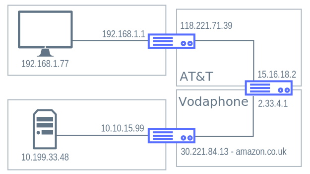

Network
Wires - Boxes - Magic
 Gil Pratte
Gil Pratte
Agenda
http://World Wide Webhttps://Secure World Wide WebInside the Network
OSI Model Presentation
Layer 8 - You!
Layer 7 - Application Layer
Layer 6 - Presentation Layer
Layer 5 - Session Layer
Layer 4 - Transport Layer
Layer 3 - Network Layer
Layer 2 - Data Link Layer
Layer 1 - Physical Layer
IPS Model Presentation
Different than OSI
| OSI | IPS |
|---|---|
| Model then architecture | Architecture then model |
| Conceptual | Concrete |
| Strict boundaries | Loose boundaries |
| 7 layers | 4 layers |
Thank you AT&T
June 1989 open sourced TCP/IP for unix
IBM and others picked it up
Windows 95 joined the party
Layers
Application Layer
Tranport Layer
Internet Layer
Link Layer

Application Layer
The purpose of the Application Layer is to provide software applications with services of the Internet like file/data retrieval, send and receive email, publish messages, and use cryptocurrencies.
Design of the protocols of the Applciation Layer tend to follow Jon Postel's law:
[build application protocols with] a general principle of robustness: be conservative in what you do, be liberal in what you accept from others.
Basically, any protocol that uses TCP or UDP lives in the Application Layer.
Examples of Application Layer Protocols
- HTTP
- FTP
- SMTP
- DHCP
- DNS
- SSH
Transport Layer
Delivers data from one application to another irrespective of what data that the application sends and what the underlying network looks like. This layer is the one that defines and allows binding to ports.
TCP (connection-oriented)
[provides] one-to-one, connection-oriented, reliable communication service responsible for the establishment of a connection, the sequencing and acknowledgement of packets sent, and the recovery of packets lost during transmission.
reliable stream delivery service which guarantees that all bytes received will be identical with bytes sent and in the correct order.
TCP creates two-way transmission connections with a three-step handshake:
client send SYN flag with random number
server replies with SYN-ACK flag with client's number + 1 and a new random number
client sends ACK flag and server's number + 1
UDP (connection-less) "fire and forget"
- Does not guarantee delivery
- Does not guarantee ordering
- Does not guarantee removal of duplicates
- Does not guarantee error correction
Internet Layer
This is IP. It does two things: addressing (IP addresses) and routing. That's it. Figure out where a packet needs to go.
ICMP
- used for error messages
- used for operational information
- not used for data
- contained in IP packets but handled differently
Link Layer
Physical hardware moving packets (from to MAC adresses)

Kinds of Networks
LAN

WAN

Network Devices
Switches (OSI Layer 2 Devices)
Routers (OSI Layer 3 Devices)
Firewall

Cloud Computing

"Cloud computing is a form of Internet-based computing that provides shared computer processing resources and data to computers and other devices on demand."
AWS Elastic Beanstalk
"You can simply upload your code and Elastic Beanstalk automatically handles the deployment, from capacity provisioning, load balancing, auto-scaling to application health monitoring."
Cloud Security
The service provider can
Access all data
Share information if necessary (e.g. legal)
Whatever else is in the privacy policy (that you didn't read)
More Cloud Security
"In a cloud provider platform being shared by different users there may be a possibility that information belonging to different customers resides on same data server. Therefore, Information leakage may arise by mistake when information for one customer is given to other."
Even More Cloud Security
"Additionally, Eugene Schultz, chief technology officer at Emagined Security, said that hackers are spending substantial time and effort looking for ways to penetrate the cloud. "There are some real Achilles' heels in the cloud infrastructure that are making big holes for the bad guys to get into". "
Limitations and disadvantages
Security
Limited options
Bandwidth
Cost
HTTP
the language of the Web
HTTP specification
HTTP functions as a request–response protocol in the client–server computing model.
HTTP versions
- HTTP V0.9 (1991)
- HTTP/1.0 (1996) - connection for every request
- HTTP/1.1 (1997) - connection reuse
- HTTP/2 (2014)- server push
HTTP Session
HTTP is a stateless protocol.
HTTP Request
- A request line (e.g., GET www.ibm.com HTTP/1.1)
- Request header fields (e.g., Accept-Language: en)
- An empty line
- An optional message body
https://curl.haxx.se/
What happens when we type http://www.example.com/ in a browser
Review
- Network fundamentals: OSI, LANs, WANs, routers, switches
- HTTP: request, response, and everything in-between
- Database: request and getting data from a database
Security!
Security is an ever-moving target, and it’s important to pursue a comprehensive, system-wide approach. In security circles we encourage you to adopt "layers of security", so that each layer tries to be as secure as possible in its own right, with successive layers providing additional security. The "tighter" the security of each layer, the more robust and safe your application will be.
At the bottom level you’ll need to deal with issues such as transport security and system identification, in order to mitigate man-in-the-middle attacks.
Next you’ll generally utilise firewalls, perhaps with VPNs or IP security to ensure only authorised systems can attempt to connect.
In corporate environments you may deploy a DMZ to separate public-facing servers from backend database and application servers.
Your operating system will also play a critical part, addressing issues such as running processes as non-privileged users and maximising file system security. An operating system will usually also be configured with its own firewall.
Hopefully somewhere along the way you’ll be trying to prevent denial of service and brute force attacks against the system. An intrusion detection system will also be especially useful for monitoring and responding to attacks, with such systems able to take protective action such as blocking offending TCP/IP addresses in real-time.
Transport Layer Security
(aka Secure Socket Layer)
Establishing the Secure Connection
Establishing the Secure Connection

Establishing the Secure Connection

Establishing the Secure Connection
Establishing the Secure Connection

Establishing the Secure Connection

DIY Certs
You can generate your own certificates, too!
OWASP! Sql injecting, XSS, CSRF (OWASP) CORS, JWT, OAuth
Network Tools
nslookup
Translate a name to an IP address
ping
Verify a host exists
traceroute
Find a route from your computer to another
nmap
Scans for valid IP addresses and ports on those hosts
Credits
Cloud computing image created by Sam Johnston.{kind=link}
IP stack connections
UDP encapsulation